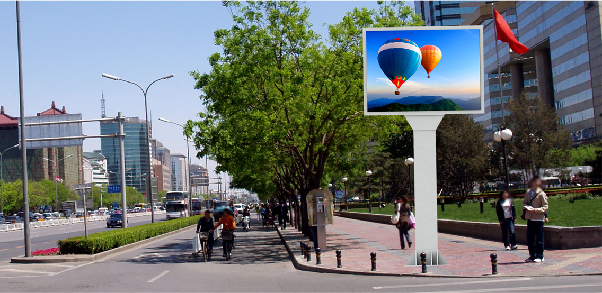

01.10.2016

FACEMEDIA est une régie publicitaire qui développe un réseau d’écrans urbains grand format (3,20 m x 2,50 m), et propose la réalisation et la diffusion de spots publicitaires sur ses écrans.
Performance et Modularité : Les emplacements de nos écrans sont choisis parmi les voies les plus passantes pour permettre un maximum de vue.
Les messages étant mis à jour à distance, nous disposons d’une grande souplesse pour modifier les messages si Interactivité et Impact : La luminosité et les mouvements garantissent une visibilité optimale.
Cet écran augmente de 40% le taux d’attractivité, de 70% le taux de reconnaissance et de 30% le taux de mémorisation du message.
une régie publicitaire qui développe un réseau d’écrans urbains grand format (3,20 m x 2,50 m), et propose la réalisation et la diffusion de spots publicitaires sur ses écrans.
Performance et Modularité : Les emplacements de nos écrans sont choisis parmi les voies les plus passantes pour permettre un maximum de vue. Les messages étant mis à jour à distance, nous disposons d’une grande souplesse pour modifier les messages si
Interactivité et Impact : La luminosité et les mouvements garantissent une visibilité optimale.
Cet écran augmente de 40% le taux d’attractivité, de 70% le taux de reconnaissance et de 30% le taux de mémorisation du message.